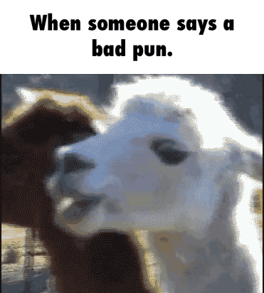
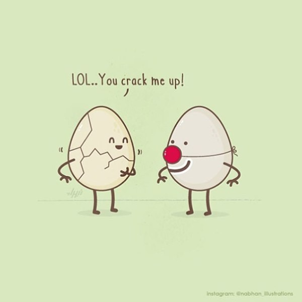

This site is beautifully created in HTML by Sariha.
Everyone loves to hear a good pun every now and then. But what is a pun exactly? A good way to define a pun is to say it is a play on words, where two words that either sound the same or are spelled the same but have different meanings are used in a humorous way.
Puns can be used in everyday life to cheer or impress someone and can be used in multiple situations. And so if you are ever in a situation where you need a pun- FAST; this is the site to come to.
Lets face it, those terrible puns that make you groan out loud - are the best. You tell everyone that they're bad but secretly deep down inside you are wanting more. Here is an endless supply of bad puns for bad days.
THE TRUTH IS OUT- Shout out to the people who ask what the opposite of “in” is.
Q. Why can't Harry Potter tell the difference between the pot he uses to make potions and his best friend? A. They're both cauld ron.
A FAN FAVOURITE- Two windmills are standing in a wind farm. One asks, “What’s your favorite kind of music?” The other says, “I’m a big metal fan.”
THIS IS INTENSE- The past, the present, and the future walk into a bar… It was tense.
NOT IN MOURNING- I hate how funerals are always at 9 a.m. I’m not really a mourning person.
BRAIN TRANSPLANT- I wasn’t originally going to get a brain transplant, but then I changed my mind.
This is where the puns that you submit are posted on the page. You can submit a pun by filling out the form in the...
Q.What happens to a frog's car when it breaks down? A. It gets toad away! ~Rania R.
Person 1: Q. How does Moses make his tea? A. Hebrews it
Person 2: Jew kidding me?
Person 1: No Israeli how he does it
Person 1: Whoever stole my copy of Microsoft Office, I will track you down. You have my Word.
Person 2: Wow, you Excel at reposting.
Person 1: What is your Power Point?
Person 1: I lapsed into a food coma for eating too much.
Person 2: Someone better call the Hambulance.
Person 1: They Butter.
Person 2: Be careful not to a-Salt anyone when you come out of your coma.
Person 3: They may have to keep you in Custardy for the night.
Person 2: Long story short, please don't eat so much any-Smore.
Person 1: I have a photographic memory, but the camera is out of focus.
Person 2: Your sense of humour isn't Developed yet either
Person 3: Nikon-not believe another pun battle has started.
Person 1: Better hop on board quick, it'll be gone in a Flash.
Person 3: I didn't get these puns at first, but then it clicked.
Person 2: I can picture that.
| Holiday | Pun |
|---|---|
| Christmas Puns | Q.What did Adam say on the day before Christmas? A.It’s Christmas,Eve! Q. Why did they ask the turkey to join the band? A.He had the drum sticks. Q.Which of Santa’s reindeer needs to mind his manners the most? A."Rude Olph". Reindeer don't go to public school, they’re elf taught. |
| Valentines Day Puns | You’re the loaf of my life. You’re soda-lightful. Words cannot express hummus I love you. We’re butter together. Can’t bear to be without you. You’re one in a chameleon. |
| New Years' Puns | A New Year's resolution is something that goes in one year and out the other. |
| Easter Puns | Q. Why does the Easter Bunny not go to school? A. He was eggs-pelled Q.Why was the bunny upset? A.He was having a bad hare day Q. What do you call a rabbit with fleas? A. Bugs Bunny Q. Why did the bunny have bad grades? A. Cus he didn't carrot all. |
| Insert Holiday | Insert Puns |
| Insert Holiday | Insert Puns |